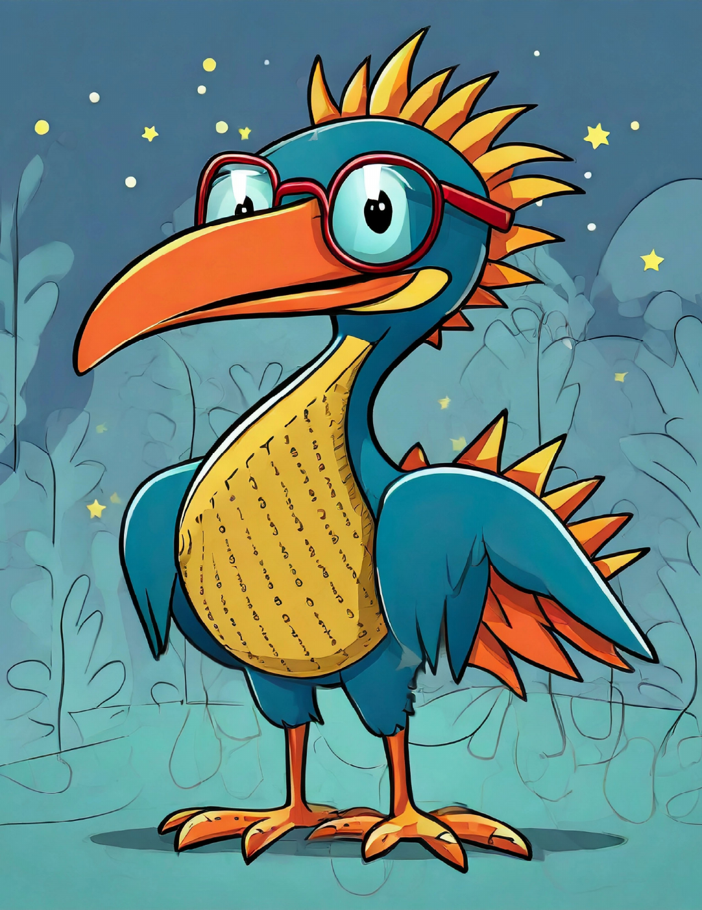

A LITTLE STRUCTURE. A LOT OF THINKING.
Make room for
great ideas.
One text. Four stages. Set your class up for a thoughtful conversation with Arty W.D.
R → T → W → D

YOUR NEXT GREAT DISCUSSION
Set the pace.
Choose your times and give each stage a clear purpose.
Settings save automatically on this browser.